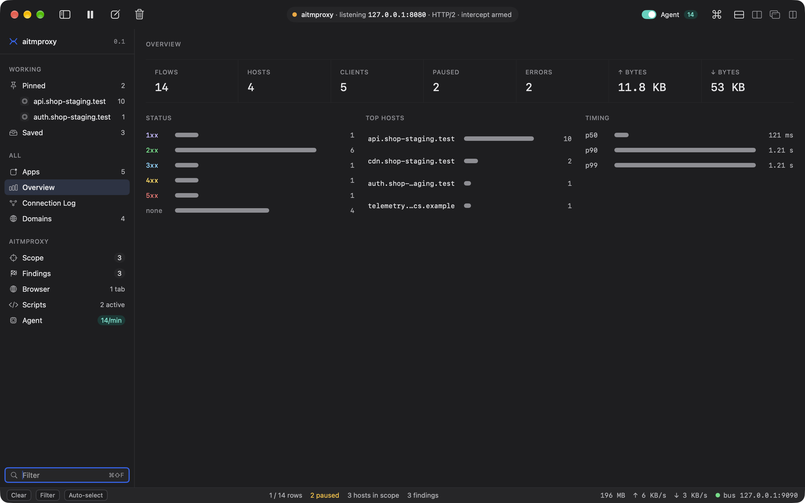
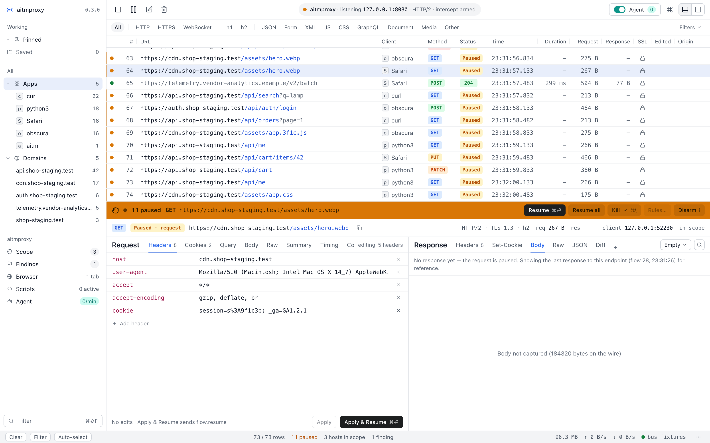
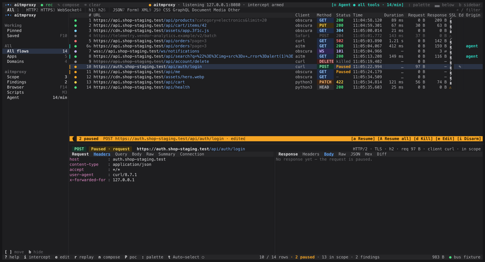

Intercept and edit by rule
Hold requests or responses that match a method, path, host or header. Edit, then resume.
ruler1 · armed
matchPOST /api/cart/*
holdrequest, response
held#41 · 1 of 1
aitmproxy captures, intercepts, edits, replays and reproduces traffic across four layers of the wire — HTTP, WebSocket, HTTP/2 and raw L4 packets. One core, driven completely by an operator or by an AI assistant: the same commands over the CLI, the GUI and MCP.
by hand
$ aitm flow mutate --id 41 --set-body '{"qty":999}'
by agent
flow.mutate({ id: 41, set_body: '{"qty":999}' })
Two operators, one command. Both reach the same held flow, and both land in the same audit log.
Written in memory-safe Rust. Runs on macOS and Linux. Open source under MIT or Apache-2.0.
Not a mockup. This is the web UI armed on a staging host — eleven requests paused on the wire, the intercept bar lit amber, the agent toggle idle in the corner.
aitm web · intercept armedShort, real captures from the running tool. Step through a capability — each one is the same core, driven by hand or by agent.
Every action in aitmproxy is a command. A person runs it from the CLI or a GUI; an AI assistant calls the very same command over MCP. There is no second API for agents and no hidden menu for humans — one core, and one record of who did what.
$ aitm intercept add --match 'POST /api/cart/*'
rule r1 armed · POST /api/cart/*
$ aitm flow list --held
41 POST /api/cart/items armed —
$ aitm flow mutate --id 41 --set-body '{"qty":999}'
flow 41 body updated (27 B)
$ aitm flow resume --id 41
flow 41 → 200 in 212 ms› intercept.add({ match: "POST /api/cart/*" })
‹ { rule: "r1", state: "armed" }
› flow.list({ held: true })
‹ [{ id: 41, method: "POST", path: "/api/cart/items", state: "armed" }]
› flow.mutate({ id: 41, set_body: '{"qty":999}' })
‹ { id: 41, body_bytes: 27 }
› flow.resume({ id: 41 })
‹ { id: 41, status: 200, ms: 212 }| time | operator | command | target | result |
|---|---|---|---|---|
| 12:04:17.221 | hand | intercept.add | r1 | armed |
| 12:04:19.004 | agent | flow.list | held | 1 flow |
| 12:04:21.310 | hand | flow.mutate | #41 | body 27 B |
| 12:04:21.318 | agent | flow.mutate | #41 | body 27 B |
| 12:04:23.902 | hand | flow.resume | #41 | 200 · 212 ms |
Everything aitmproxy sees is a Flow with a short lifecycle. Observed flows pass straight through and are recorded. A rule can intercept one: the request pauses, readable and editable, until you resume it or drop it.
| # | method | url | status | time |
|---|---|---|---|---|
| 43 | WS | wss://api.example.com/live | 101 | — |
| 42 | GET | /api/users/me | 200 | 12 ms |
| 41 | POST | /api/cart/items | armed | — |
| 40 | GET | /api/products?page=2 | 200 | 38 ms |
| 39 | GET | /api/products?page=1 | 200 | 41 ms |
POST /api/cart/items HTTP/1.1
host: shop.example.com
content-type: application/json
{ "sku": "A-1042", "qty": 999 }
Each capability is a command, so each one works from the app, the terminal, a script or an assistant. The fragments below are the real shape of the tool.
Hold requests or responses that match a method, path, host or header. Edit, then resume.
Send any flow again with changes, or compose a request from scratch. Each replay is a new flow.
Answer a request from a file on disk, or redirect it to another upstream, without touching the app.
Frames in both directions, live. Hold a frame, change it, or inject your own into either side.
Negotiated over ALPN and decrypted with the local CA. Each multiplexed stream is an ordinary flow you can hold and edit.
Sit on a raw TCP stream, capture the bytes both ways, and hold a segment to read, edit and release — any protocol, not just HTTP.
Save a capture as a session, reopen it later, and move traffic in or out as HAR.
Let pinned hosts through untouched, by pattern, while everything else is decrypted and inspected.
A browser that already trusts the proxy, for reproducing findings and taking the screenshot that proves them.
Generate, export, install and remove the local CA from the CLI or the app. Nothing is installed without asking.
Every command above has a CLI form and an MCP form, and all of them can be called from a Rhai plugin.
$ aitm flow resume --id 41flow.resume({ id: 41 })A native macOS app, a web UI and a terminal UI. All three are clients of the same core, showing the same flows, and so is your assistant.



Plugins are Rhai scripts with a few hooks and a capability list. Reproductions are YAML files you can read top to bottom. Both are meant to be written by hand first, and by an assistant second.
A plugin sees each flow as it passes, can edit it, answer it, or record a finding. It runs in a sandbox and gets only the capabilities it declares. One flow API spans HTTP, WebSocket, HTTP/2 and L4, so a new protocol needs no new language. Scripting reference
// addons/guard-admin-writes.rhai
fn on_request(flow) {
let req = flow.request;
if req.path.starts_with("/admin") && req.method != "GET" {
if !req.headers.has("X-Admin-Token") {
flow.set_response(403, #{ "Content-Type": "text/plain" }, "blocked by aitm");
finding(#{ name: "unauthenticated admin write blocked", severity: "medium",
flow_id: flow.id, tags: ["access-control"] });
return halt();
}
req.headers.set("X-Reviewed", "aitm");
}
}A PoC is a saved, re-runnable reproduction of a finding: a few steps, a few matchers, and a success condition. Run it again next week and get the same answer. PoC format reference
id: reflected-xss-search-q
info:
name: Reflected value in search 'q' parameter
severity: high
steps:
- http:
url: "{{target}}/search?q={{payload}}"
matchers:
- type: word
part: body
word: "{{marker}}"
- browser:
action: screenshot
label: confirmed
success:
all:
- type: browser-eval
expr: "window.__marker"
equals: "{{marker}}"The scanner is a plugin, not a mode. scan.discover drives the embedded browser to crawl an authorized, in-scope target, then reads the captured flows back for injection points — query and body parameters, headers, path segments. Like everything else it is one command, so an operator runs it and an assistant can be tasked with the very same call.
$ aitm scan discover --target 'https://staging.example.com'scan.discover({ target: "https://staging.example.com" })Deny-by-default: a target outside the session scope is refused before the crawler opens a single page. Discovery today; injection and PoC generation build on the same seam.
unsafe Rust in the whole toolHomebrew or Cargo on macOS and Linux, or a native Linux package. Trust the local certificate once, start the proxy, and point your app or browser at it.
$ brew install mrbrutti/aitmproxy/aitm$ aitm ca install$ aitm startThe proxy listens on 127.0.0.1:8080; the web UI opens on :8082. The v0.1.0 tap is private for now — the download page covers the token, Cargo and native packages.